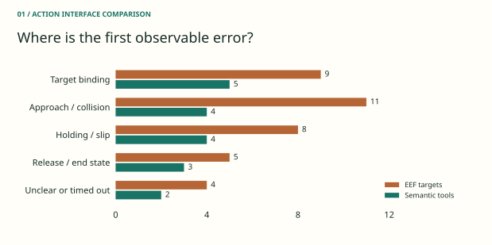
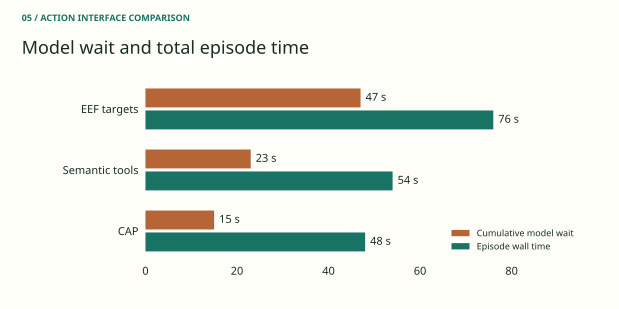
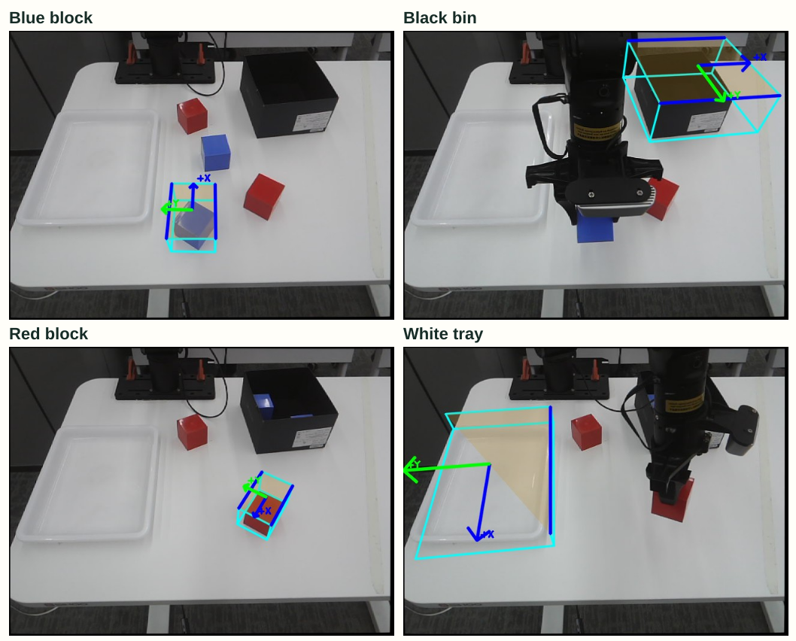
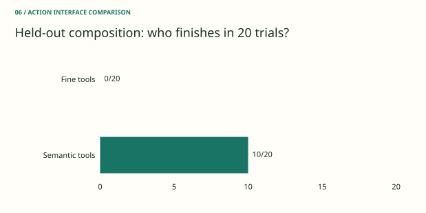
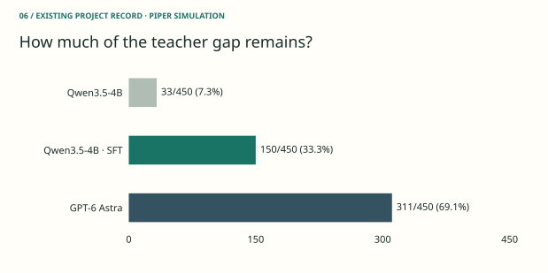
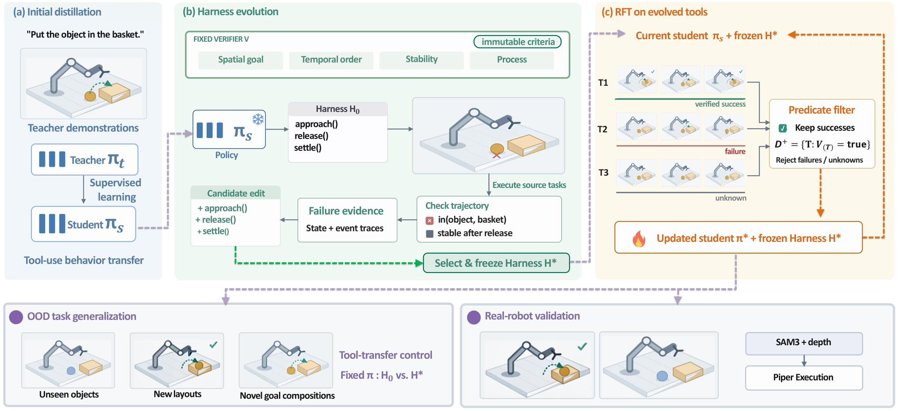
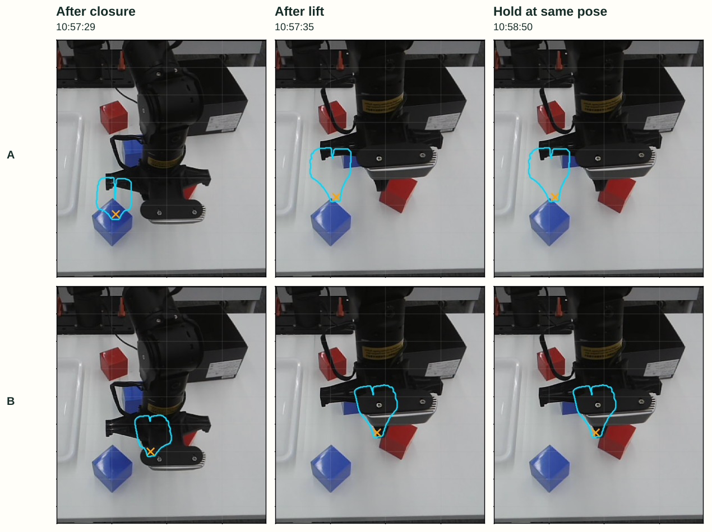
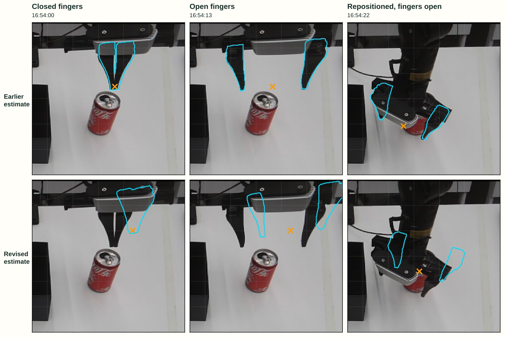
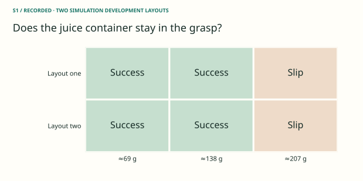

Contents
Key takeaways
- The same tools support two ways of making decisions. Across the four GPT‑6 Astra tasks, we expect similar success rates for stepwise semantic tool use and CAP (Code as Policy). With stepwise calls, the model reads each return and chooses the next action. With CAP, the model writes a program whose conditions and retries run on tool feedback.
- The student learns part of the teacher’s tool-use behavior. Across 15 simulated manipulation tasks, Qwen3.5‑4B goes from 33/450 successes before distillation to 150/450 afterward under the native task criteria. The GPT‑6 Astra teacher reaches 311/450 under the same execution conditions.
- Executor changes improve a fixed policy. On the same 450 initial scenes, switching harnesses raises verified successes from 130 to 185. Training the student on data collected with the evolved harness brings the total to 239. Method and controlled comparisons.
Introduction
To pick up a block, a language model can specify an approach pose, close the gripper and command a lift. It can also request a grasp by object name. Both interfaces can close the fingers. If the block stays on the table, who detects the miss and who calls for another attempt? We examine that division of responsibility through grasps, releases and recovery on a physical robot.
Fifteen workbench video clips let us check the object’s position after the gripper lifts or releases it. To measure what a student learns from tool traces, we vary the policy and its executor separately across 15 simulation tasks, then examine hardware trials with matched starting layouts. Two humanoid simulation replays in §3.2 illustrate a separate question: which placement criteria carry across bodies, and what a second robot needs to verify before taking over.
We hold GPT‑6 Astra and the workbench layouts fixed to study the effect of the action interface. In simulation, we first hold the tools fixed and compare the same student before and after distillation. We then freeze the student and change the executor to test whether the same tool vocabulary yields more reliable actions.
1. Study design
1.1 Tasks and evaluation settings
1.1.1 Main simulation benchmark: 15 tasks
We evaluate each policy on 450 fresh Piper simulation scenes, 30 per task. The table groups all tasks by manipulation demand and training exposure. Seven task families supply demonstrations for initial distillation and scenes for executor search and self-training collection. Evaluation on these families uses fresh layouts. The remaining eight test whether the learned operations extend to other objects, spatial relations and compositions.
| Manipulation demand | Distillation-source tasks (7) | Tasks outside the source set (8) |
|---|---|---|
| Grasp and place | Can into bin, remove cube from tray | Pick up carrot, lemon into bin |
| Contact and pushing | Push basket, close drawer | Push pot |
| Spatial relations | Apple/juice ordering | Place tomato near potato, reverse cube stack, reverse apple/juice ordering |
| Search, sorting and composition | Shell game, red objects into basket | Bin/tray sorting, set the table |
Native success (N-SR) uses the environment’s terminal flag. Verified success (V-SR) additionally checks the goal relation, workspace validity, event order and a post-action hold. The hold window spans 1.50 seconds from the first to the last of 31 states sampled at 20 Hz. For a placement, the destination must still support the object after release. Failures and attempts with insufficient evidence remain in the denominator.
1.1.2 Distribution shifts and hardware protocols
Four disjoint simulation suites introduce new layouts, object instances, goal compositions or longer sequences. Each contains 120 scenes and is scored separately with the native criterion. The paired hardware evaluation covers can placement, shell game, apple/juice ordering and reverse cube stacking. Ten reset-matched layouts per task give 40 attempts per policy and 200 across five conditions. These tasks probe containment after release, search under occlusion, relative order and stack stability.
The GPT action-interface comparison examines four workbench tasks: can placement, drawer closing, cube removal from a tray and red-object collection. The tray-to-drawer sequence in §2.3 is held out for that comparison.
1.2 Models, action interfaces and evaluation conditions
- Observation and instruction
- GPT
- EEF targets or action chunk
- Local controller IK and interpolation
- Robot
- Robot → New observation → Observation and instruction
- Observation and task
- GPT coding agent
- Code and tools
- Robot
- Review traces
- Review traces → Diagnose and repair → GPT coding agent
- Review traces → Validate and save → Validated skills
- Validated skills → Retrieve and reuse → GPT coding agent
- Observation and task
- GPT planner
- Action policy and analytic primitives
- Robot
- Verify outcome
- Verify outcome → Replan, reposition or retry → GPT planner
- Action policy proposes an action
- GPT review
- Accept, edit or replace
- Execute action
The four architectures locate GPT at different points in the control loop. The first three can reuse demonstrations, task memory and validated skills. Action review can be added to an existing policy. The four experimental interfaces below measure a different distinction.
- EEF targets
- A base-frame end-effector target, orientation and gripper command. Local IK solves for joints. Fresh images and measured pose follow each segment.
- Fine tools
- Separate localization, approach-point selection, alignment, descent, closure and lift. The model can inspect each primitive’s return before continuing.
- Semantic tools
- Use Guava’s nine model-facing tools. A grasp takes an object name. The local executor chooses the grasp pose, approaches, descends and closes. Lifting takes another motion command.
- CAP
- Expose the same semantic tools, but let the model write conditions and retries in a program. Live returns drive branches; completion or an error returns a trace to the model.
Score the task end state and record wrong grasps, collisions, protective stops and timeouts separately. Match speed, workspace, low-level step limits and wall-clock limits; charge actions inside tools and CAP loops to the same budget. Keep instructions and camera evidence fixed apart from the required action schema. The interface comparison uses GPT‑6 Astra with fixed inference settings.
1.2.1 Matched layouts and execution budgets
The four workbench tasks each have 20 layouts. GPT‑6 Astra uses all four interfaces on the same 80 starting configurations, giving 80 planned attempts per interface and 320 in total. Overhead reference images, container orientation and initial gripper position define each reset. The condition order rotates across layouts.
1.2.2 Coordinate frames and rejected commands
End-effector commands require an explicit coordinate frame, orientation convention and flange-to-fingertip transform. Tool calls move part of this conversion into the executor. Both interfaces log the requested command, accepted target and measured pose, including inverse-kinematics rejections in the budget. When the hand remains stationary, these records distinguish an absent command, an unreachable target and incomplete tracking.
2. Results
2.1 End-effector control and tool use
2.1.1 Overall performance and scoring
Show all counts
| Interface | Can into bin | Close drawer | Remove cube | Red objects | Total |
|---|---|---|---|---|---|
| EEF targets | 13 | 14 | 11 | 5 | 43 |
| Fine tools | 11 | 12 | 10 | 6 | 39 |
| Semantic tools | 17 | 17 | 16 | 12 | 62 |
With GPT‑6 Astra, direct end-effector commands complete 43/80 trials and semantic calls complete 62/80, a difference of 23.75 percentage points. Red-object collection shows the largest gap, at 5/20 versus 12/20. Identifying its source requires tracing which object was selected, whether the fingers cleared its neighbors and where the object landed.
2.1.2 Task-level differences and tray clearance
Figure 2 breaks down end-effector targets, fine tools and semantic tools by task. Direct poses trail semantic calls by three trials on drawer closing and seven on red-object collection. The overall gap is concentrated in particular tasks.

Tray removal requires a reachable grasp and clearance at the rim. Direct poses complete 11/20 trials and semantic tools 16/20. The clear and cluttered tabletop clips show the first approach and contact; the final frame alone cannot distinguish a localization error from a motion correction.
A single blue block sits inside the tray. Pause at lift and placement to distinguish clearing the rim from coming to rest on the table.
The goal is still to remove the blue cube. Other blocks and small objects now occupy space outside the tray. Compare the chosen landing area with the clear-table recording.
2.1.3 Who decides to retry a missed grasp?
Both interfaces use the same localization, grasp and release tools. Suppose the gripper closes but the cube stays in the tray. With stepwise calls, the model reads the return and requests localization again. A CAP program can request a fresh location on that return within the same execution. Figure 3 compares how often each interface calls on the model to decide.

2.2 Tool granularity and execution cost
2.2.1 One grasp: when does the model get control back?
Start from the same frame: the gripper is open above the cube in the tray after an align call. Our semantic interface follows Guava’s nine model-facing tools: grasp, align, move, rotate, close_gripper, release, home_pose, get_position and get_position_and_size. We expand just grasp below, keeping the target fixed. [1]
grasp(target_name="cube")The model supplies the object name. Guava’s top-down PCA path refreshes RGB-D, segments the cube, derives a grasp pose from its point cloud, moves to an approach point, descends and closes. The model then receives text feedback such as closed.
mask = segment("cube")
pose = fit_grasp_pose(mask)
move_to_approach(pose)
descend_to_grasp(pose)
close_gripper()These pseudocode names describe our decomposition. Each line returns control to the model. It can change the target after segmentation or revise the approach after motion. The final closure uses the same gripper criterion.
If the reply is closed and the cube is still on the tray, the next decision can open the gripper and locate it again from a fresh image. Even grasped is a gripper signal: this Guava revision reports an obstructed closure (blocked) to the model as grasped. Both interfaces need a separate lift and a view of the cube clearing the tray. Count every physical closure, including retries inside a tool. [1]
With GPT‑6 Astra fixed, fine tools score 39/80 and semantic tools score 62/80. Two mechanisms could explain the difference. The model may save several fragile coordinate hand-offs, or the grasp implementation may contain a better localizer or hidden retries. Counting tool names cannot distinguish these effects.
| Decision interface | Success | Median decisions per trial |
|---|---|---|
| Fine tools | 39/80 | 15 |
| Semantic tools | 62/80 | 7 |
| CAP | — | 3 |
Table 1 leaves the CAP success count open pending paired trial records. A CAP program can check for a hold before lifting and retry immediately after a miss. A faulty holding signal can also send it down the wrong branch. One model decision may therefore trigger several physical closures.
For a clean retest, expand a semantic call into its primitive trace. Match the localizer, holding threshold, approach path and retry allowance, then let GPT sequence those primitives. If the gain appears only when local re-localization is enabled, credit that change to the executor.
2.2.2 Failure attribution and target binding
Red-object collection involves three decisions. The model specifies a target, the localizer binds the description to an instance, and the executor chooses an approach. A correct description can produce a mask that includes a neighbor; correct binding can still lead to collision during descent. Figure 4 assigns each failed trial to its earliest observable deviation and retains later events for diagnosis.


GPT‑6 Astra records 37 failures with direct poses and 18 with semantic tools in this comparison. Fewer localization failures could reflect more reliable binding or a fresher image captured closer to execution. Replaying the same target binding at a fixed observation time would distinguish these accounts.
2.2.3 Evidence for grasp and release
Gripper arrival, object lift and stability after release occur at distinct stages. The clips show a single red target and a scene with similarly colored neighbors. A neighbor can occlude the target on a second approach, making the interval between contact and re-localization relevant. These recordings document visibility conditions; their per-trial interface labels are unavailable.
This setup has a single red target. Follow it from the right side into the container on the left, then inspect its position after withdrawal.
A red block and a strawberry-shaped object both match the color instruction. Yellow and blue objects share the workspace. Follow the block to the basket, then watch which object the gripper approaches next.
2.2.4 Conditional execution and state across turns
A stepwise agent returns to the model after a missed grasp. A CAP program can branch locally on the result, provided the return carries evidence about physical state. Isolating program generation requires common perception and grasp feedback across conditions and a record of every closure executed inside each tool.
Three inverted cups hide parts of the table. Pause before a lift, then inspect the newly exposed area. Which locations have already been checked? Once a cup moves, “the one on the left” stops being a reliable identifier. The yellow piece is visible in the red dish near the end.
From the side, the target is still hidden when the fingers reach the cup. It becomes visible only after the rim clears the table. At that instant the agent can update its search record; collecting the target takes a separate action.
Shell game additionally requires persistent instance identity. Sorting by image position distinguishes three cups within one frame. After moving a cup, selecting the leftmost instance can reference a different object. Recovery therefore depends on refreshing the observation while retaining the inspected object and its location.
Two other designs place this decision at different boundaries. Code as Policies generates programs that read perceptual outputs and call control primitives. A programmed condition can handle a miss locally. Harness VLA lets a planner choose between analytic primitives and a frozen VLA, then inspect fresh RGB-D observations before deciding whether to reposition and retry. On Piper, these alternatives motivate counting model decisions separately from physical attempts. [2] [3]
2.2.5 Decision latency and wall time
A pause can occur between successive end-effector commands. Four timestamps separate decision latency from motion and settling time: request sent, executable reply received, motion started and tool returned.
| Interface | Median cumulative model wait | Median wall time |
|---|---|---|
| EEF targets | 47 s | 76 s |
| Semantic tools | 23 s | 54 s |
| CAP | 15 s | 48 s |
Sum request waits within each trial before taking the median. Wall time runs from instruction to stop. Subtracting the two medians does not recover motion time. If inference overlaps movement, align the intervals to distinguish inference latency from time the arm truly stood idle.
Inference and motion costs must be aligned in time. A tool call may include local perception, tracking and settling. If the model prepares the next command during a lift, cumulative inference time can increase without increasing robot idle time. A slip during that lift can also invalidate the prepared transport command.


The basket clip shows the interval from contact at the rim to visible displacement. Assigning a pause to inference requires the corresponding request timestamps. Timeouts, exhausted budgets and early exits affect episode duration, so completion time among successes and wall time across all attempts answer different questions.
Use the edge of the table as a fixed reference for the red basket. After the arm withdraws, check whether the basket stays in its new position.
2.2.6 Summary
Bundling primitives can change model-turn counts without changing physical attempts. Count both and align request and execution timestamps to measure how long the arm actually waits.
2.3 Randomized layouts and held-out compositions
2.3.1 Simple and randomized initial layouts
The external views show release in both stacking layouts. Pause at placement and after the fingers clear the object to check whether the lower block supports the upper one. Estimating a randomization effect requires matched model runs.
Red and green blocks start apart. Once the hand retreats, the lower red block must support the upper green one. Compare the first placement with the randomized-layout clip.
A held block can look perfectly stacked. From the side, watch for a gap between the fingers and the green block as the arm withdraws. Does the upper block stay supported once the hand has left?
2.3.2 Stage criteria for composed tasks
Clearing the orange cup frees the destination for the red block. Sorting red and blue blocks requires tracking which objects remain after each placement. The recordings illustrate an action precondition and cross-turn object identity. The cube-and-drawer experiment below is a separate proposed holdout.
An orange cup initially occupies the blue tray. Check when the cup actually leaves the tray, then follow the red block into that same space. Clearing the destination makes the second placement possible.
Four blocks are sorted between a white tray and a black box. After each placement, look for the remaining block of the same color. Jump from a blue-block transfer to a later red one, then inspect both containers in the final view.


The side view resolves a height difference that is hard to see from above. The blue block appears in front of the rim and is then lifted above it. The opaque wall hides the landing point once the arm withdraws.
2.3.3 Relative order on a cluttered table
Ordering adds a constraint that persists after the first placement. Once the banana has moved and the gripper picks up the green object, the next observation must recover the new left–right relation between both objects. The clip preserves the starting and final arrangements for that check.
The arm moves the yellow banana, then lifts the elongated green object. Follow both placements and compare their final left–right relation after the gripper withdraws. The blocks and plush toy remain in the scene.
2.3.4 Interfaces on a held-out instruction
Our proposed held-out instruction is to transfer the cube from the tray into an already-open drawer and then close it. Cube removal and drawer closing were exercised separately. The combined instruction and its layouts are held out from interface development. OOD refers to that composition; prior exposure during model pretraining is unknown.
Both frozen interfaces support grasping, moving, release and pushing. Neither receives a task-specific routine for loading the drawer. GPT‑6 Astra uses both interfaces on the same 20 new layouts, giving 40 planned attempts separate from the 320 in the four-task comparison. The cube must remain inside, the gripper must withdraw, and the drawer must stay closed. Placement without closure is partial progress.
| Interface | Four main tasks | Held-out composition |
|---|---|---|
| Fine tools | 39/80 | 0/20 |
| Semantic tools | 62/80 | 10/20 |


On the held-out task, GPT‑6 Astra completes 0/20 trials with fine tools and 10/20 with semantic tools. Compare the cube's first lift, release, and the decision to switch to pushing. A fine agent might succeed at lifting but spend its remaining budget re-establishing intermediate state. A semantic agent might grasp correctly and still release the cube where it jams the drawer. These are competing trace-level explanations to test on hardware.
2.3.5 Controlling for sequence length
Retrieving a cube and then closing a drawer adds hand-offs. Even unchanged per-step reliability can reduce whole-task success as a sequence grows. To isolate novelty, add a familiar composition with a similar number of primitive actions. Match the view, action budget and retry allowance, and count every regrasp inside a semantic tool.
For each interface, keep the denominator at all 20 layouts and report three cumulative counts: cube lifted clear, cube still inside after release, and drawer held closed after withdrawal. A gap at the second event points us toward transport and release. Similar counts through placement followed by a gap at closure would send us to the push and remaining budget. The endpoint totals alone do not identify these stage losses.
2.3.6 Summary
A failed episode may break at retrieval, release or closure. The total alone cannot tell us which step failed.
2.4 Distilling tool use in simulation
2.4.1 Training data and supervision
The tool interface also gives us a student training target: what the teacher saw, called and received. In Piper simulation we exported 667 base trajectories and 374 recovery branches, 1,041 in total, from GPT‑6 Astra for Qwen3.5‑4B. A loader check caught a case where the original file contained a tool call but its contents did not reach supervision. Checking the request and its execution matters for training too.
| Record type | Records |
|---|---|
| Base trajectories | 667 |
| Recovery branches | 374 |
| Total | 1041 |
The training export retains its review labels, including 27 previously rejected records. Recovery branches share prefixes with their parents, so the record count exceeds the number of independent starting scenes.
Distillation preserves execution order. Images and tool returns supply context, while teacher calls and arguments provide supervision. A failed return in a recovery branch conditions the subsequent correction. Branches sharing a parent prefix retain that provenance when measuring dataset size.
2.5 TERM: harness evolution and policy learning
A correct tool request can still fail because of grasp height or release timing. TERM separates the policy, which emits a tool name and arguments, from the execution harness, which turns the request into motion, observations and returns. Freezing one side at a time makes the contributions of executor changes and policy updates measurable on the same scenes.
2.5.1 Teacher, base model and distilled student
With the original harness H₀ on the same 450 scenes, distillation raises Qwen3.5-4B’s native success count from 33 to 150, a gain of 26 percentage points. GPT‑6 Astra completes 311 scenes, leaving a gap of 161 after distillation. Table 5 also gives independent verifier passes for Base (29) and SFT (130). Only native success was reported for the teacher.




2.5.2 Evolving the executor with the student fixed
Starting with the distilled student and original harness H₀, a separate Qwen3.5-4B generator edits a restricted controller using failed predicates, linked calls and timestamped observations. A failed hold check, for example, can be traced to the preceding release. Candidates share the tool schema, observation permissions, action budget and verifier. Six rounds allocate four proposals each and up to twelve development scenes per proposal. A candidate replaces the incumbent only after a strict improvement on paired starts. A disjoint selection set precedes freezing H★.
A shell-game trace shows how an edit can be audited. A round-two candidate requested a pause before grasping. The log records two waits of five simulation steps each, followed by a grasp and lift and 31 passing post-action native hold checks. A round-three candidate failed on the same layout. Search therefore tracks both recovered and lost successes across paired scenes. The replay establishes what the edit did on this execution.
2.5.3 Testing what the student retains
The same distilled student makes 1,200 collection attempts with each harness, yielding 400 training-eligible trajectories with H₀ and 520 with H★. Rejection-sampling fine-tuning (RFT) uses 160 records from each source with matched task composition and token budgets. Supervision uses the student’s own emitted calls. Testing both trained policies on H₀ isolates the data-source comparison. Switching the H★-data student back to H★ then measures the additional deployment effect.
| Condition | Policy | Test harness | N-SR | V-SR |
|---|---|---|---|---|
| Teacher reference | GPT-6 Astra | H₀ | 311/450 (69.11%) | Not reported |
| Base | Qwen3.5-4B · before distillation | H₀ | 33/450 (7.33%) | 29/450 (6.44%) |
| SFT | Qwen3.5-4B · after distillation | H₀ | 150/450 (33.33%) | 130/450 (28.89%) |
| Tools | Same distilled student | H★ | 204/450 (45.33%) | 185/450 (41.11%) |
| RFT-H0 | Trained on H₀ data | H₀ | 195/450 (43.33%) | 177/450 (39.33%) |
| RFT-Evo | Trained on H★ data | H₀ | 227/450 (50.44%) | 209/450 (46.44%) |
| Full TERM | Same H★-data student | H★ | 257/450 (57.11%) | 239/450 (53.11%) |
With the distilled policy fixed, switching executors raises verified successes from 130 to 185, a net gain of 55. Under H₀, equal-data fine-tuning on H★ records yields 32 more verified successes than training on H₀ records (209 versus 177). Deploying the former with H★ adds another 30. Full TERM passes 140/210 fresh source-task scenes and 99/240 scenes outside the demonstration tasks. Transfer to new tasks remains harder than transfer to new layouts of familiar tasks.
On the four shift suites, Full TERM achieves 68/120 native successes on new layouts, 64/120 on new objects, 61/120 on compositions and 55/120 on longer sequences. On hardware, SFT, Tools and Full complete 9/40, 13/40 and 17/40 attempts. Full succeeds on 5 can placements, 4 shell games, 5 orderings and 3 reverse stacks. The small paired hardware sample does not establish a difference after Holm correction.
2.6 From image targets to fingertips: checking extrinsics across poses
At closure above the blue block, two extrinsic estimates for the fixed overhead camera place the projected fingertips at different pixels. The wrist-camera calibration supplied a reference for estimating the fixed overhead-camera transform relative to the base. Each column of Figure 9 uses the same RGB frame and measured joints for both estimates. Cyan traces the modeled fingers; the orange cross marks their predicted center. Under A, the cross falls near the blue block. The physical fingers align more closely with B. The mismatch under A persists during the 75-second hold after the lift.


The can sequence shows why a single frame is a poor calibration test. At the initial closed pose in Figure 10, the tip discrepancy is about 0.9 pixels with the earlier estimate and 45.7 with the revised one. These values describe that frame alone. A rigid overhead camera has a constant transform to a fixed base; the reprojection residual can vary with arm pose. Check RGB and joint timestamps, fingertip geometry and residuals on held-out poses. These overlays alone cannot isolate timing, kinematics or calibration as the cause.


A camera on a moving neck requires a different transform. On the EHR21G calibration workbench, we fixed the checkerboard, interpolated joint feedback to image time and fitted the rigid transform from the head RGB camera to its neck link. At run time, forward kinematics at the measured waist and neck pose maps an RGB-D selection into the base frame. Nine poses were used for fitting and three for validation. Held-out 3D checkerboard-corner consistency error was 4.74 mm at P95; the largest angular deviation was 0.65°. This tests cross-pose localization. Physical pick accuracy still needs an independent measurement at the fingers. Calibration workbench · public validation report · Open calibration workbench (local service or tunnel required)
3. Discussion and outlook
3.1 Main findings
On the physical Piper arm, direct poses let the model specify each geometric target. A semantic grasp handles approach, descent and closure locally and returns a gripper state. Whether the object clears its support still has to be checked after the lift. A successful return can also hide an error in one of those steps. Hardware recordings expose object motion. Synchronized tool traces are needed to locate the first divergence.
3.2 Cross-embodiment transfer and multi-agent coordination
What carries over if Piper and Skywalker 2 both receive the instruction “put the block in the box”? Start with what an observer can score: the object stays inside after release. Gripper closure, approach direction and wrist pose depend on the body. A transfer test would keep the GPT policy, object, destination and success condition fixed while swapping in each robot’s grasp and placement tools.
At 8 seconds the block rises with the hand. At 11 seconds the hand has moved away and the block remains in the box. These frames let us check the grasp and the placement separately.
Two-robot execution also requires a handoff condition. The opening placements in the sorting clip can run in parallel. Then a blue block is on A’s side while the blue basket is on B’s. A stages the block on the table for B to collect. The same object links their two actions. For two independently deciding agents, we would have A announce the object ID and relay position. B would confirm from its own view that the block is down and A’s hand is clear before collecting it, or request a fresh location if it has slipped.
Follow the blue block labeled item3. At 9 seconds A’s left hand begins the relay. At 15 seconds B’s right hand reaches the relay area to collect it. At 30 seconds the overhead view shows two matching blocks in each basket. The buttons use playback time.
Both clips document simulated motion. They come without a matched cross-body policy test or decision logs from two GPT agents. Using the same starting layouts, we would score lifts and post-release placements on each body. For the two-robot task, we would compare a fixed relay sequence with a receiver-confirmed relay, recording successful transfers, wrong-object pickups and elapsed time. That comparison would tell us when an extra confirmation is worth the wait.
3.3 Failure modes and diagnostics
3.3.1 Payload sensitivity after lift
Two apple/juice layouts use the same fingertip grasp while the simulated container mass varies. Each run executes nine tool actions. Both layouts succeed at approximately 69 g and 138 g, and both fail at 207 g. None of the six runs reports a motion error.


Download the six trial records (CSV)
At the higher mass the container slips during the lift and remains near its starting position. The arm reaches its commanded poses while the object fails to travel with it. The motion return, object motion and final ordering thus provide three distinct observations. Two simulated layouts do not establish a physical payload limit.
3.3.2 Fingertip transforms and interference from neighboring objects
In one failed red-object scene the tomato had been located correctly, yet the grasp tool missed its descent target. Comparing segment orientations against the requested fingertip trace revealed a stale transform: the tool used the preceding orientation to convert the tip offset, and the planner then selected a different tilt. The fingertip drifted sideways by about 5.4 mm. Asking the teacher to identify the tomato again would leave this error intact.
We synchronized the orientation and fingertip conversion per segment. In two historical scenes all 14 actions ran and the task stayed successful for ten check steps. Only one of two fresh layouts succeeded: the other approach hit a neighboring potato. We then added a neighbor check using the current RGB-D view. The traces explain a specific executor fix, while the new layouts show why two repaired scenes cannot establish a hardware success rate.
The hardware clip shows how a neighboring object can intrude on the approach. Watch whether it moves during the lift. This camera view cannot resolve the millimeter-scale error measured in simulation.
The red block starts between blue and yellow objects, with a black box across the table. Watch where the fingers enter and what moves on lift. The final view shows where the block lands; assessing clearance requires the approach footage.
3.3.3 Verifying the end state after contact
Drawer closure is defined by panel position relative to the cabinet. In an oblique view, the gripper may obscure the cabinet edge and make visual overlap resemble a flush closure. An extra view can support offline scoring. Attributing a policy decision requires the observations the model actually received.
Compare the opening before the push and after the hand clears the front. The gripper briefly hides the panel during contact.
In simulation recovery branches the drawer can be reopened after verified closure. The native success flag changes and the model receives the post-perturbation image before choosing a recovery action. A hardware clip without an identifiable perturbation time supports inspection of motion but cannot establish the same intervention.
3.4 Limitations and future work
The simulation comparison holds observation permissions, action budgets and verification fixed, allowing execution changes to be separated from training-data effects. Generalization remains limited by task coverage, perception error and physical calibration. Each policy in the physical harness comparison has only 40 attempts, and the cross-body replays lack a matched-policy comparison. Broader evaluation calls for independent layouts and synchronized target bindings, motion returns and terminal observations.
Scaling hardware experiments also requires a reset check. When the gripper returns home, are the can and bin back at their assigned positions? ENPIRE checks the scene reset before execution and verifies the outcome afterward. Keeping those checks separate helps distinguish a poor reset from a policy failure. [4]
For an interface comparison with twenty layouts per task, one success shifts the rate by five percentage points. Physical resets, occlusion and calibration can change the reachability of the same object. More independent layouts and paired outcomes in both directions are needed to estimate interface gains and their uncertainty.
References
- Guava. The nine-tool interface, argument adapter and grasp executor. Guava · Model prompt · Argument adapter · Grasp and closure feedback
- Code as Policies. Robot policy programs that compose perception and control APIs. Paper · Example programs
- Harness VLA. A frozen VLA, analytic primitives and replanning after execution. Paper · Execution framework
- ENPIRE. Hardware resets, verification and policy improvement. Project
The six Piper simulation records used in the juice payload diagnostic. CSV
Citation
Chenjie Yang. Robot Action Interfaces for GPT — End-effector control, tool use and harness evolution in physical and simulated manipulation. EIR Technology. Permalink
@misc{yang-robot-action-interfaces,
author = {Chenjie Yang},
title = {Robot Action Interfaces for GPT — End-effector control, tool use and harness evolution in physical and simulated manipulation},
organization = {EIR Technology},
url = {https://cjgogo27.github.io/RUABlog/piper-action-preview/en.html}
}